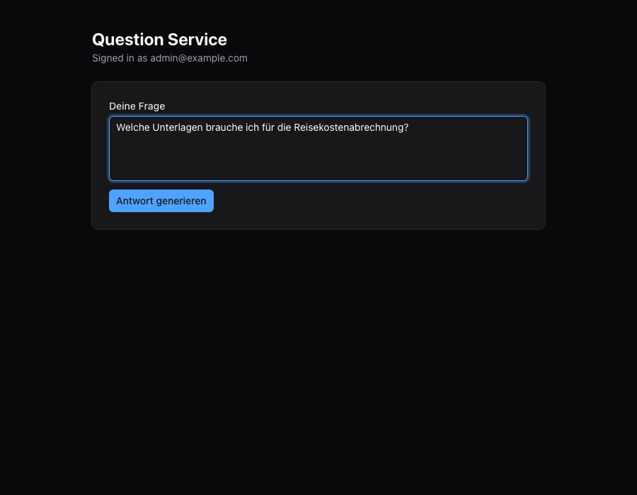
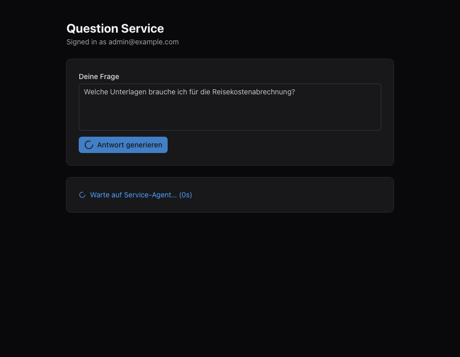
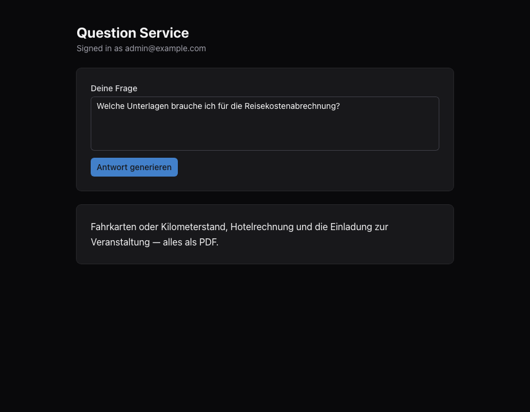

1 Write your question
Plain language — the agent reads it as it stands.

You ask, a service agent answers, the page shows the result
Your question goes into a queue that the service agent works through.
Plain language — the agent reads it as it stands.

The page waits and keeps checking; you can leave it open.

It appears on the page you left open.
The question stays above it, so the two can be read together.
